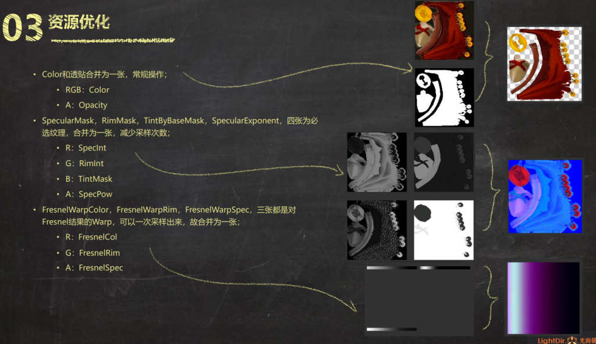

Optimize Combine Texture
-
여러장의 텍스쳐를 쓰는 대신, 안쓰는 채널이 없도록 packing한다면, 추가적인 텍스쳐를 불러오는 로딩시간과 메모리를 줄일 수 있다.
-
예)
- Albedo + Specular
- NormalMap + HeightMap
- ...
| _DiffuseTex | RGB | 불투명시 3채널 |
| _NormalTex | RG | |
| _SpecularTex | R | |
| _MaskTex | R | |
| _HeightMapTex | R | |
| _NoiseTex | R | |
| _BrdfTex | ||
| ... | R |
ex) NormalMap와 ParallaxMapping
- NormalMap에선 R,G채널 2개의 채널을
- ParallaxMapping에선 깊이에 대한 하나의 채널을 추가해서 사용한다
NormaMap Packing시 주의
BC5 (x, y, 0, 1)을 보면, RGBA채널중에서 RG채널만 사용하고 있다. 이를 이용하여, BA채널에 마스킹이나 다른 데이터값을 체워 넣을 수 있다.
B채널은 공짜로 사용할 수 있으나, A채널까지 사용하려면 유니티의 UnpackNormal함수는 다음과 같이 채널을 바꾸는 기능이 있어, 따로 함수를 작성해 주어야 한다.
// Unpack normal as DXT5nm (1, y, 0, x) or BC5 (x, y, 0, 1)
real3 UnpackNormalmapRGorAG(real4 packedNormal, real scale = 1.0)
{
// Convert to (?, y, 0, x)
// R과 A를 혼합하는 과정이 있는데, 이미 텍스쳐의 포맷을 알고 있으면 이 과정은 불필요하다.
packedNormal.a *= packedNormal.r;
return UnpackNormalAG(packedNormal, scale);
}
ex

